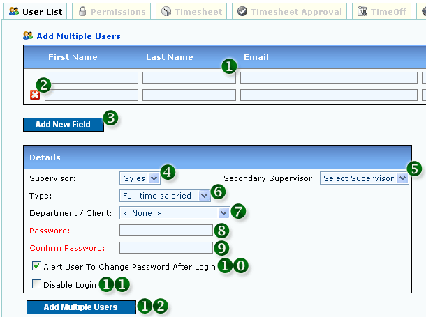
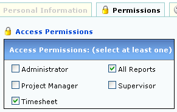
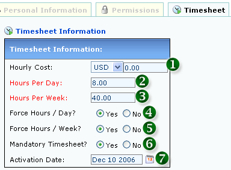
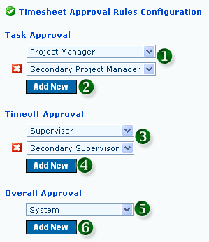
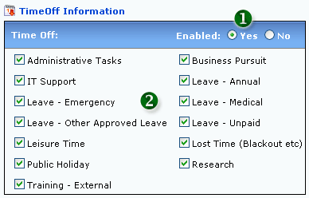

<table class="no-border" cellpadding=3 cellspacing=3>
<tr><td>
	<H1>1. Add Multiple Users</H1>
	<pre align="left">     
	<strong>Figure 1: Add Multiple Users</strong></pre>
	<ol>
		<li><strong>1. MANDATORY FIELDS:</strong> First Name, Last Name, Email and Login</li>
		<li><strong>2. DELETE USER</strong></li>
		<li><strong>3. ADD NEW USER</strong></li>
		<li><strong>4. SUPERVISOR:</strong> Listed for Users with Supervisor Permission only</li>
		<li><strong>5. SECONDARY SUPERVISOR:</strong> Listed for Users with Supervisor Permission only</li>
		<li><strong>6. EMPLOYEE TYPE</strong></li>
		<li><strong>7. DEPARTMENT OR CLIENT</strong></li>
		<li><strong>8. USER PASSWORD (MANDATORY)</strong></li>
		<li><strong>9. PASSWORD CONFIRMATION (MANDATORY)</strong></li>
		<li><strong>10. PASSWORD ALERT:</strong> When checked, User will be prompted to Change Password after Login</li>
		<li><strong>11. DISABLE LOGIN:</strong> When checked, User cannot Login to System</li>
		<li><strong>12. ADD MULTIPLE USERS</strong></li>
	</ol>
	<H1>2. User Permission</H1>
	Select the "Permission" tab to access User Permission page.
	<pre align="left">     
	<strong>Figure 2: User Permission</strong></pre>
	<ol>
		<li><strong>Administrator:</strong> Full Access and Permission to All Areas</li>
		<li><strong>Project Manager:</strong> Permission to Create, Edit and Delete Projects and Tasks</li>
		<li><strong>Timesheet:</strong> Permission to Add and Update Timesheets (DEFAULT)</li>
		<li><strong>All Reports:</strong> Permission to Access All Reports (DEFAULT)</li>
		<li><strong>Supervisor:</strong> Permission to become Supervisor to Users</li>
	</ol>
	<H1>3. Timesheet Settings</H1>
	Select the "Timesheet" tab to access Timesheet Settings page.
	<pre align="left">     
	<strong>Figure 3: Timesheet Settings</strong></pre>
	<ol>
		<li><strong>1. HOURLY COST:</strong> Hourly Cost per Hour</li>
		<li><strong>2. HOURS PER DAY:</strong> Minimum Hours of Timesheet submission for one Working Day</li>
		<li><strong>3. HOURS PER WEEK:</strong> Minimum Hours of Timesheet submission for one week</li>
		<li><strong>4. FORCE HOURS / DAY:</strong> Mandatory for User to meet hours / day rule</li>
		<li><strong>5. FORCE HOURS / WEEK:</strong> Mandatory for User to meet hours / week rule</li>
		<li><strong>6. MANDATORY TIMESHEET:</strong> Mandatory for User to enter weekly Timesheet</li>
		<li><strong>7. ACTIVATION DATE:</strong> User needs to enter Timesheet starting this Date</li>
	</ol>
	<H1>4. Timesheet Approval Rules</H1>
	Select the "Timesheet Approval" tab to access Timesheet Approval Rules page.
	<pre align="left">     
	<strong>Figure 4: Timesheet Approval Rules</strong></pre>
	<ol>
		<li><strong>1. TASK APPROVAL DEFAULT RULES</strong></li>
		<li><strong>2. ADD TASK APPROVAL RULE</strong></li>
		<li><strong>3. TIMEOFF APPROVAL DEFAULT RULES</strong></li>
		<li><strong>4. ADD TIMEOFF APPROVAL RULE</strong></li>
		<li><strong>5. OVERALL APPROVAL DEFAULT RULE:</strong> System Overall Approval will trigger after the Task and Timeoff approvals have been satisfied first</li>
		<li><strong>6. ADD OVERALL APPROVAL RULE</strong></li>
	</ol>
	<H1>5. Timeoff Settings</H1>
	Select the "Timeoff" tab to access Timeoff Settings page.
	<pre align="left">     
	<strong>Figure 5: Timeoff Settings</strong></pre>
	<ol>
		<li><strong>1. ENABLE / DISABLE TIMEOFF OPTION IN TIMESHEET</strong></li>
		<li><strong>2. SELECT TIMEOFF OPTIONS IN TIMESHEET</strong></li>
	</ol>
</td></tr>
</table>